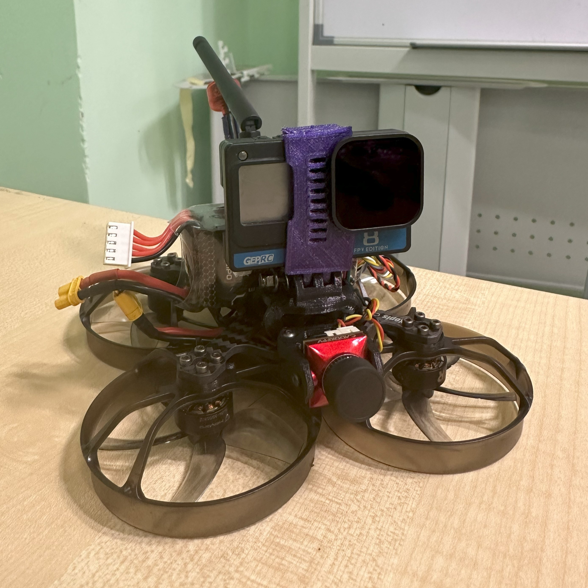

Projects
Lightweight Autonomous UAV Platform
Sub-300g UAV with ArduPilot & YOLOv11 for intelligent aerial sensing. Silver Award at UM UG I-Fest 2025.
Ducted Fan Drone
Designed and built for confined industrial inspections with YOLOv8 AI integration.
Rescue Drone - Human Detection System
AI computer vision + IoT capability for search-and-rescue. Top 5 in Robo-IoT Drone Design Competition.
Inflatable Car Floater
Prototyped with Utsunomiya University Japan to help cars survive floods.
Solar Tracker
Arduino + SolidWorks design. IEEE UM Competition — 1st Runner-up.